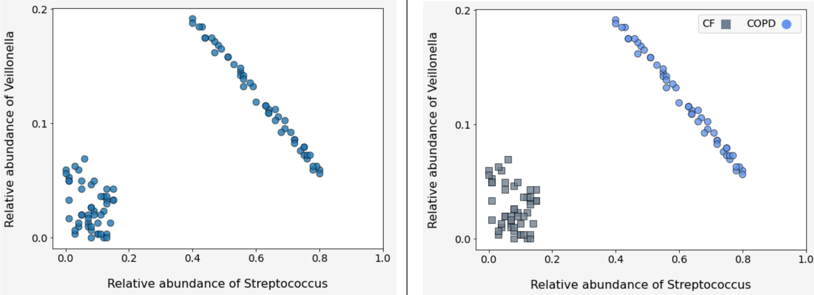
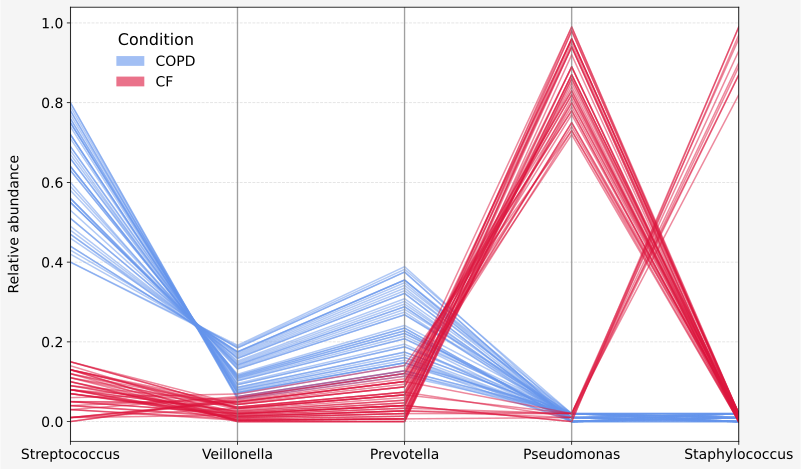

We're going to change it up just for this page and explore a different data set. This data set is fake, but resembles some real data sets that I worked with. The data describes bacterial communities you might find in a person's lungs, specifically a person with Cystic Fibrosis (CF) or Chronic Obstructive Pulmonary Disease (COPD). These are both chronic respiratory conditions that often have co-occuring and persistent bacterial lung infections. We want to know if the bacteria in the lungs look different for people with CF versus COPD. Each variable is the name of a type of Bacteria and the values are the percentage of that bacterial type we found out of the total. One thing to know is that bacteria like to compete with each other for food and space.
How do we explore relationships between two variables?
A scatterplot shows the relationship between two numeric variables - as one increases, what does the other one do? The scatterplots show how Streptococcus and Veillonella populations vary with each other. [Don't be scared of the variables, these are just names for organisms, like Turtles and Lizards, you can think of them as those instead if you like.] The plot on the left shows all of the data with the same color and marker. Notice that there are two groups. We also had two groups in our study population. The plot on the right uses different colors and markers to show the CF and COPD groups. Now we can see what's really going on: for individuals with CF, there just isn't much of either type of bacteria; for individuals with COPD the more Streptococcus you have, the less Veillonella you have and vice versa.
What about more than two variables?
This plot looks pretty complicated! This parallel coordinates plot is showing the values of five variables,five different types of bacteria side by side. The colors represent the CF and COPD groups. Each line represents a single individual. What we are looking for is whether lines group together in any sort of discernable pattern. We can see some clear patterns when we look at all five variables together. Individuals with COPD tend to have a lot of Streptococcus, and a bit less Prevotella and Veillonella. They don’t have Pseudomonas and Staphylococcus. CF individuals fall into two groups: those with a lot of Pseudomonas and not much of anything else, and those with a lot of Staphylococcus and not much of anything else.